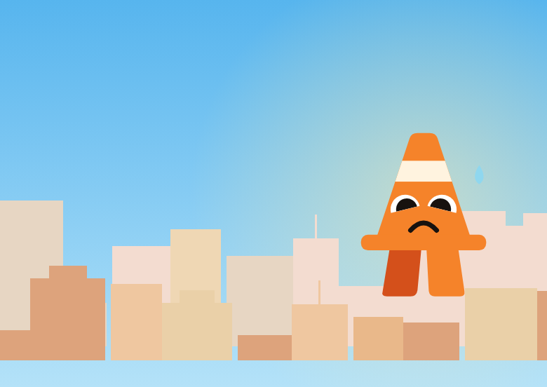
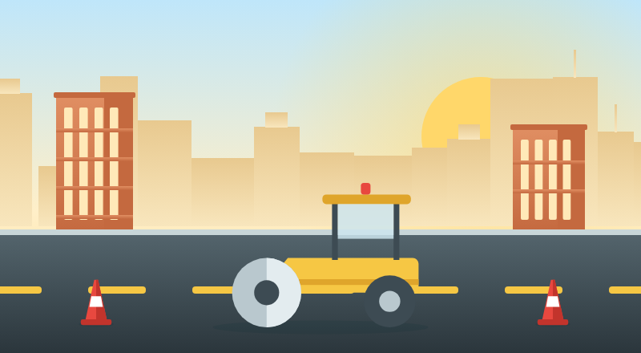

May nakita ang AI

Kalsada, Aguinaldo Hwy
80 metro ang layo
Palitan
Paskil
Mali ang impormasyon
2 ang hindi tugma sa rekord
Contract ID
Pangalan ng proyekto
Kontratista
Opisina
Halaga
Paskil: ₱5,200,000 • Rekord: ₱4,850,000
Petsa ng simula
Petsa ng pagtatapos
Paskil: Nob 15 • Rekord: Okt 4
Walang paskil sa lugar
Piliin kung wala kang nakita
Sa lugar ng proyekto
Bukas na hukay
Nakita sa litrato
Walang harang
Nakita sa litrato
Walang ilaw
Hindi sigurado ang AI
Ilarawan ang nakita mo
(opsyonal)
Huwag i-report
I-report sa LGU